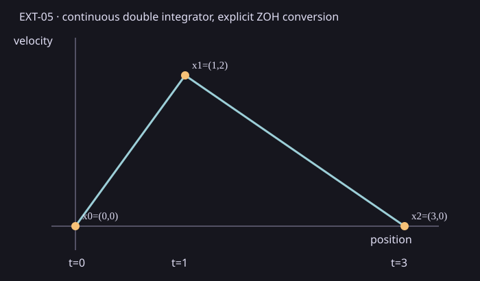

Minimal input and analytic answer
State coordinates are position and velocity. The continuous rates are
A=[[0,1],[0,0]], B=[[0],[1]], zero offset and no external port.
Physical times are [0,1,3]; zero-order-held controls are [2,-1].
The initial state is (0,0). Analytic transitions are
A_d=[[1,Δt],[0,1]] and B_d=[Δt²/2,Δt], yielding
(0,0) → (1,2) → (3,0).

Recorded result
| Stage | Duration | A[0,1] | B[0] | B[1] | State after stage |
|---|---|---|---|---|---|
| 0 | 1 | 1 | 0.5 | 1 | (1,2) |
| 1 | 2 | 2 | 2 | 2 | (3,0) |
Every saved call checked these independent literals. The receipt records constant LTI rates, zero-order hold, RK4 step doubling and an observed local estimate. That estimate is not a certified global error bound.
Measurement and scope
One excluded 100-call warmup preceded seven measured 100-call batches: 700 verified calls, zero observed failures. Median batch duration was 920,500 ns (range 916,000–1,005,700 ns). Each interval includes fixture construction, the public discretizer, snapshot, two state steps and literal checks; it excludes CSV output and rendering. These are single-adapter descriptive durations on the recorded host, with no comparator, speedup or limiter attribution. Native internal counters and actual thread activity were unavailable.
Source commit: c1125dc393c84015a289dbb97c3bfc5f8b225673. The saved record,
raw trial CSV, summary CSV,
manifest and offline ZIP
bind the result to the build and host receipts. Reproduce with
python scripts/reports/ext05/capture.py --source <clean-checkout> --capture <new-directory> --commit c1125dc393c84015a289dbb97c3bfc5f8b225673 --cmake <cmake>,
then run collect.py and render_saved.py on the saved capture.